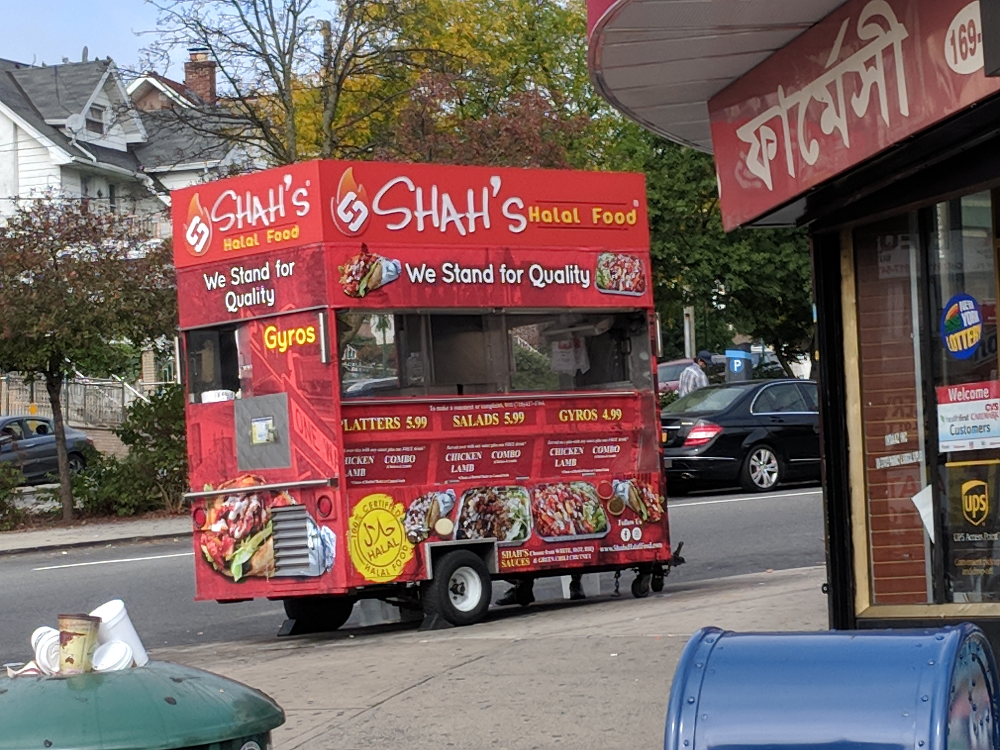

Halol sertifikati nima va AQShda halol mahsulotni qanday aniqlash kerak: belgilar, idoralar va zabiha
AQShda halol oziq-ovqatni davlat emas, balki xususiy mustaqil sertifikatlovchi idoralar tasdiqlaydi. Bu ma'lumotnomada halol va zabiha tushunchalari, AQShdagi asosiy sertifikat idoralari (IFANCA, ISA, AHF, HMS), mahsulot haqiqatan halolligini qanday tekshirish hamda O'zbekistonda joriy etilgan halol tizimi faqat manbalarga asoslangan faktlar bilan tushuntiriladi.

Halol — shariatda ruxsat etilgan narsa degani; uning aksi harom. AQShda «halol» so'zini mahsulotga yozish uchun yagona davlat idorasi yo'q — halolni xususiy, mustaqil sertifikatlovchi tashkilotlar tekshirib tasdiqlaydi. Quyida halol va zabiha tushunchalari, AQShdagi asosiy sertifikat idoralari, mahsulotni qanday tekshirish va O'zbekistondagi tizim faqat manbalarga asoslangan faktlar bilan bayon etiladi. Bu diniy fatvo yoki yuridik maslahat o'rnini bosmaydi.
Halol va «zabiha» nima
Oziq-ovqatda harom hisoblanadigan narsalarga cho'chqa go'shti, qon, o'laksa (shariatga muvofiq so'yilmagan hayvon) va mastlik keltiruvchi ichimliklar kiradi. Go'sht halol bo'lishi uchun hayvon shariatga muvofiq — Alloh nomi zikr qilinib, bo'yin tomiridan bir harakatda — so'yilishi talab etiladi; bu usul «zabiha» (yoki «zakot») deb ataladi. Shuningdek, tarkibidagi masalliqlar (jelatin, fermentlar, spirtli aromatizatorlar) ham harom manbadan bo'lmasligi lozim.
AQShda sertifikat qanday ishlaydi
AQShda halol sertifikatlash to'liq xususiy, uchinchi tomon idoralari zimmasida. Sertifikat — korxona yoki mahsulot muayyan islomiy halol standartiga mos kelishini mustaqil auditorlar tomonidan tekshirilgan tasdiqnomadir. Idoralar ishlab chiqarish inshootini tekshiradi, masalliqlar ro'yxatini ko'rib chiqadi va keyinchalik ham doimiy nazorat (surveillance) olib boradi.

Asosiy sertifikatlovchi idoralar
AQShda keng tanilgan bir necha idora bor. IFANCA (Islamic Food and Nutrition Council of America) 1982-yilda tashkil etilgan bo'lib, Shimoliy Amerikadagi eng xalqaro e'tirof etilgan sertifikatlovchilardan biri; uning «Crescent-M» (yarimoy va M) belgisi oziq-ovqat, ichimlik, dori va parvarish mahsulotlarida uchraydi va IFANCA ANAB tomonidan akkreditatsiyadan o'tgan. Islamic Services of America (ISA) 1975-yilda tashkil etilgan, markazi Ayova shtatining Cedar-Rapids shahrida. Shuningdek American Halal Foundation (AHF) va USA Halal Chamber of Commerce ham milliy darajada tan olingan idoralardir.
Go'sht sohasida Halal Monitoring Services (HMS) alohida ajralib turadi: u faqat qo'lda (zabiha) so'yishni talab qiladi va butun jarayonni qat'iy nazorat qilib, HMS sertifikatiga ega restoran, do'kon va qassobxonalar ro'yxatini yuritadi.
Mahsulot haqiqatan halolligini qanday tekshirish
Birinchi qoida: o'rashda muayyan sertifikat idorasining logotipi va sertifikat raqami bo'lishi kerak. Oddiygina «halal» deb yozilgan, biror idora tasdig'isiz matnning o'zi dalil emas. Kompaniya halol sertifikatiga ega bo'lishi mumkin, lekin u faqat bitta inshoot yoki bitta mahsulot liniyasiga tegishli bo'lishi ehtimoli bor — shu sababli idoraning saytidan yoki unga qo'ng'iroq qilib, aniq mahsulot qamrab olinganini tekshirish tavsiya etiladi.
Go'sht uchun zabiha (qo'lda so'yish) va mashinada so'yish o'rtasidagi farq, hushsizlantirish (stunning) masalasi hamda harom mahsulot bilan aralashib ketish (cross-contamination) e'tiborga olinadi. Restoranlarda yetkazib beruvchi va go'sht manbasi haqida so'rash mumkin; masalliqlar yorlig'idagi jelatin, mono- va digliseridlar, spirtli aromatizatorlar kabi shubhali tarkiblar tekshiriladi.
O'zbekistonda halol tizimi
O'zbekiston halol standart sifatida Islom Hamkorlik Tashkiloti standartlashtirish instituti SMIIC standartlarini (OIC/SMIIC) milliy darajada qabul qilgan; 2019-yil oxirida mamlakat SMIICga a'zo bo'ldi va unda standartlashtirish bo'yicha vakolatli organ (UZSTANDARD/Texnik jihatdan tartibga solish agentligi) ishtirok etadi. Vazirlar Mahkamasi qarori bilan 2025-yil 1-maydan boshlab SMIIC standartlari asosida sertifikatlangan mahsulot va xizmatlarga «Halal» belgisini qo'yishga ruxsat berildi.
O'zbekiston Ilmiy-sinov va sifat nazorati markazi (UzTest) Turkiyaning Halal Akkreditatsiya Agentligidan (HAA) akkreditatsiya olib, mamlakatdagi ilk rasmiy halol sertifikatlash organiga aylandi; akkreditatsiya OIC/SMIIC 2:2019 standarti asosida amalga oshirildi. Halol sertifikatlash majburiy emas, lekin ayniqsa oziq-ovqat sohasida iste'molchilar tomonidan talab etiladi.
Diaspora uchun amaliy xulosa
AQShda halol mahsulot tanlashda tan olingan sertifikat idorasining belgisi va raqamini qidirish, go'shtni nazorat ostidagi zabiha qassoblardan olish, masalliqlar yorlig'ini sinchiklab o'qish va shubha bo'lsa idoradan yoki sotuvchidan aniqlashtirish — eng ishonchli yo'l. Xulosa: «halol» so'zining o'zi kafolat emas; kafolat — tekshirilgan, hujjatlashtirilgan va nazorat qilinadigan sertifikatdir.

Manbalar
- Halal Certifying Bodies in the USA — A Guide (halalcc.org)
- ANAB Accredits IFANCA to Certify Halal Products
- Halal Monitoring Services (HMS USA) — certified listing
- Uzbekistan to allow "Halal" labeling for certified products and services (Kun.uz, 2025)
- Uzbekistan Establishes First Internationally Accredited Halal Certification Body (UzDaily)